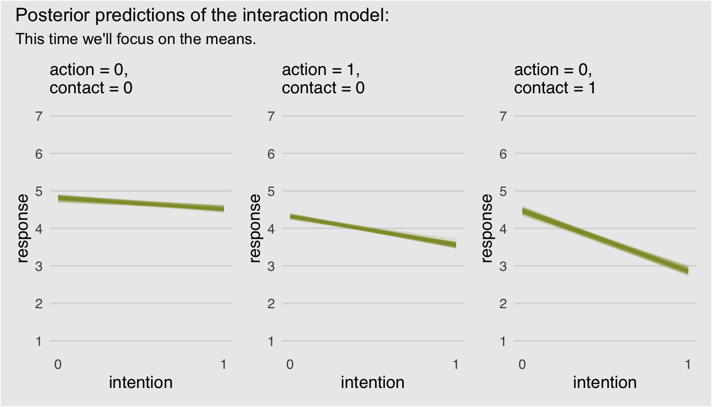

11 Monsters and Mixtures
[Of these majestic creatures], we’ll consider two common and useful examples. The first type is the ordered categorical model, useful for categorical outcomes with a fixed ordering. This model is built by merging a categorical likelihood function with a special kind of link function, usually a cumulative link. The second type is a family of zero-inflated and zero-augmented models, each of which mixes a binary event within an ordinary GLM likelihood like a Poisson or binomial.
Both types of models help us transform our modeling to cope with the inconvenient realities of measurement, rather than transforming measurements to cope with the constraints of our models. (p. 331, emphasis in the original)
11.1 Ordered categorical outcomes
It is very common in the social sciences, and occasional in the natural sciences, to have an outcome variable that is discrete, like a count, but in which the values merely indicate different ordered levels along some dimension. For example, if I were to ask you how much you like to eat fish, on a scale from 1 to 7, you might say 5. If I were to ask 100 people the same question, I’d end up with 100 values between 1 and 7. In modeling each outcome value, I’d have to keep in mind that these values are ordered because 7 is greater than 6, which is greater than 5, and so on. But unlike a count, the differences in values are not necessarily equal.
In principle, an ordered categorical variable is just a multinomial prediction problem (page 323). But the constraint that the categories be ordered demands special treatment…
The conventional solution is to use a cumulative link function. The cumulative probability of a value is the probability of that value or any smaller value. (pp. 331–332, emphasis in the original)
11.1.1 Example: Moral intuition.
Let’s get the Trolley data from rethinking (see Cushman, Young & Hauser, 2006).
Unload rethinking and load brms.
Use the dplyr::glimpse() to get a sense of the dimensions of the data.
## Observations: 9,930
## Variables: 12
## $ case <fct> cfaqu, cfbur, cfrub, cibox, cibur, cispe, fkaqu, fkboa, fkbox, fkbur, fkcar, fkspe, fkswi…
## $ response <int> 4, 3, 4, 3, 3, 3, 5, 4, 4, 4, 4, 4, 4, 5, 4, 4, 4, 4, 4, 3, 3, 3, 4, 4, 5, 4, 4, 3, 4, 4,…
## $ order <int> 2, 31, 16, 32, 4, 9, 29, 12, 23, 22, 27, 19, 14, 3, 18, 15, 30, 5, 1, 13, 20, 17, 28, 10,…
## $ id <fct> 96;434, 96;434, 96;434, 96;434, 96;434, 96;434, 96;434, 96;434, 96;434, 96;434, 96;434, 9…
## $ age <int> 14, 14, 14, 14, 14, 14, 14, 14, 14, 14, 14, 14, 14, 14, 14, 14, 14, 14, 14, 14, 14, 14, 1…
## $ male <int> 0, 0, 0, 0, 0, 0, 0, 0, 0, 0, 0, 0, 0, 0, 0, 0, 0, 0, 0, 0, 0, 0, 0, 0, 0, 0, 0, 0, 0, 0,…
## $ edu <fct> Middle School, Middle School, Middle School, Middle School, Middle School, Middle School,…
## $ action <int> 0, 0, 0, 0, 0, 0, 1, 1, 1, 1, 1, 1, 1, 0, 0, 0, 0, 0, 1, 1, 1, 1, 1, 0, 0, 0, 0, 0, 0, 1,…
## $ intention <int> 0, 0, 0, 1, 1, 1, 0, 0, 0, 0, 0, 0, 0, 0, 0, 0, 0, 0, 1, 1, 1, 1, 1, 1, 1, 1, 1, 1, 1, 0,…
## $ contact <int> 1, 1, 1, 1, 1, 1, 0, 0, 0, 0, 0, 0, 0, 0, 0, 0, 0, 0, 0, 0, 0, 0, 0, 0, 0, 0, 0, 0, 0, 0,…
## $ story <fct> aqu, bur, rub, box, bur, spe, aqu, boa, box, bur, car, spe, swi, boa, car, che, sha, swi,…
## $ action2 <int> 1, 1, 1, 1, 1, 1, 1, 1, 1, 1, 1, 1, 1, 0, 0, 0, 0, 0, 1, 1, 1, 1, 1, 0, 0, 0, 0, 0, 0, 1,…Though we have 9,930 rows, we only have 331 unique individuals.
## # A tibble: 1 x 1
## n
## <int>
## 1 33111.1.2 Describing an ordered distribution with intercepts.
Before we get to plotting, in this chapter we’ll use theme settings and a color palette from the ggthemes package.
We’ll take our basic theme settings from the theme_hc() function. We’ll use the Green fields color palette, which we can inspect with the canva_pal() function and a little help from scales::show_col().
## [1] "#919636" "#524a3a" "#fffae1" "#5a5f37"## [1] "#fffae1"Now we’re ready to make our version of the simple Figure 11.1 histogram of our primary variable, response.
p1 <-
ggplot(data = d, aes(x = response, fill = ..x..)) +
geom_histogram(binwidth = 1/4, size = 0) +
scale_x_continuous(breaks = 1:7) +
scale_fill_gradient(low = canva_pal("Green fields")(4)[4],
high = canva_pal("Green fields")(4)[1]) +
theme_hc() +
theme(axis.ticks = element_blank(),
plot.background = element_rect(fill = "grey92"),
legend.position = "none")
p1Our cumulative proportion plot, Figure 11.1.b, will require some pre-plot wrangling.
p2 <-
d %>%
count(response) %>%
mutate(pr_k = n / nrow(d),
cum_pr_k = cumsum(pr_k)) %>%
ggplot(aes(x = response, y = cum_pr_k,
fill = response)) +
geom_line(color = canva_pal("Green fields")(4)[2]) +
geom_point(shape = 21, color = "grey92",
size = 2.5, stroke = 1) +
scale_x_continuous(breaks = 1:7) +
scale_y_continuous("cumulative proportion", breaks = c(0, .5, 1)) +
scale_fill_gradient(low = canva_pal("Green fields")(4)[4],
high = canva_pal("Green fields")(4)[1]) +
coord_cartesian(ylim = c(0, 1)) +
theme_hc() +
theme(axis.ticks = element_blank(),
plot.background = element_rect(fill = "grey92"),
legend.position = "none")
p2
In order to make the next plot, we’ll need McElreath’s logit() function. Here it is, the logarithm of cumulative odds plot, Figure 11.1.c.
# McElreath's convenience function from page 335
logit <- function(x) log(x / (1 - x))
p3 <-
d %>%
count(response) %>%
mutate(cum_pr_k = cumsum(n / nrow(d))) %>%
filter(response < 7) %>%
# we can do the `logit()` conversion right in ggplot2
ggplot(aes(x = response, y = logit(cum_pr_k),
fill = response)) +
geom_line(color = canva_pal("Green fields")(4)[2]) +
geom_point(shape = 21, colour = "grey92",
size = 2.5, stroke = 1) +
scale_x_continuous(breaks = 1:7) +
scale_fill_gradient(low = canva_pal("Green fields")(4)[4],
high = canva_pal("Green fields")(4)[1]) +
coord_cartesian(xlim = c(1, 7)) +
ylab("log-cumulative-odds") +
theme_hc() +
theme(axis.ticks = element_blank(),
plot.background = element_rect(fill = "grey92"),
legend.position = "none")
p3
Why not combine the three subplots with patchwork?
The code for Figure 11.2 is itself something of a monster.
d_plot <-
d %>%
count(response) %>%
mutate(pr_k = n / nrow(d),
cum_pr_k = cumsum(n / nrow(d)))
ggplot(data = d_plot,
aes(x = response, y = cum_pr_k,
color = cum_pr_k, fill = cum_pr_k)) +
geom_line(color = canva_pal("Green fields")(4)[1]) +
geom_point(shape = 21, colour = "grey92",
size = 2.5, stroke = 1) +
geom_linerange(aes(ymin = 0, ymax = cum_pr_k),
alpha = 1/2, color = canva_pal("Green fields")(4)[1]) +
# there must be more elegant ways to do this part
geom_linerange(data = . %>%
mutate(discrete_probability =
ifelse(response == 1, cum_pr_k,
cum_pr_k - pr_k)),
aes(x = response + .025,
ymin = ifelse(response == 1, 0, discrete_probability),
ymax = cum_pr_k),
color = "black") +
geom_text(data = tibble(
text = 1:7,
response = seq(from = 1.25, to = 7.25, by = 1),
cum_pr_k = d_plot$cum_pr_k - .065
), aes(label = text),
size = 4) +
scale_x_continuous(breaks = 1:7) +
scale_y_continuous("cumulative proportion", breaks = c(0, .5, 1), limits = c(0, 1)) +
scale_fill_gradient(low = canva_pal("Green fields")(4)[4],
high = canva_pal("Green fields")(4)[1]) +
scale_color_gradient(low = canva_pal("Green fields")(4)[4],
high = canva_pal("Green fields")(4)[1]) +
theme_hc() +
theme(axis.ticks = element_blank(),
plot.background = element_rect(fill = "grey92"),
legend.position = "none")McElreath’s convention for this first type of statistical model is
\[\begin{align*} R_i & \sim \text{Ordered} (\mathbf p) \\ \text{logit} (p_k) & = \alpha_k \\ \alpha_k & \sim \text{Normal} (0, 10). \end{align*}\]
The Ordered distribution is really just a categorical distribution that takes a vector \(\mathbf p = {p_1, p_2, p_3, p_4, p_5, p_6}\) of probabilities of each response value below the maximum response (7 in this example). Each response value \(k\) in this vector is defined by its link to an intercept parameter, \(\alpha_k\). Finally, some weakly regularizing priors are placed on these intercepts. (p. 335)
Whereas in rethinking::map() you indicate the likelihood by <criterion> ~ dordlogit(phi , c(<the thresholds>), in brms::brm() you code family = cumulative. Here’s how to fit the intercepts-only model.
# define the start values
inits <- list(`Intercept[1]` = -2,
`Intercept[2]` = -1,
`Intercept[3]` = 0,
`Intercept[4]` = 1,
`Intercept[5]` = 2,
`Intercept[6]` = 2.5)
inits_list <- list(inits, inits)
b11.1 <-
brm(data = d,
family = cumulative,
response ~ 1,
prior(normal(0, 10), class = Intercept),
iter = 2000, warmup = 1000, cores = 2, chains = 2,
inits = inits_list, # here we add our start values
seed = 11,
file = "fits/b11.01")McElreath needed to include the depth=2 argument in the rethinking::precis() function to show the threshold parameters from his m11.1stan model (R code 11.8). With a brm() fit, we just use print() or summary() as usual.
## Family: cumulative
## Links: mu = logit; disc = identity
## Formula: response ~ 1
## Data: d (Number of observations: 9930)
## Samples: 2 chains, each with iter = 2000; warmup = 1000; thin = 1;
## total post-warmup samples = 2000
##
## Population-Level Effects:
## Estimate Est.Error l-95% CI u-95% CI Rhat Bulk_ESS Tail_ESS
## Intercept[1] -1.92 0.03 -1.98 -1.86 1.00 1412 1559
## Intercept[2] -1.27 0.02 -1.32 -1.22 1.00 2077 1577
## Intercept[3] -0.72 0.02 -0.76 -0.68 1.01 2327 1790
## Intercept[4] 0.25 0.02 0.21 0.29 1.01 2480 1849
## Intercept[5] 0.89 0.02 0.85 0.93 1.00 2317 1619
## Intercept[6] 1.77 0.03 1.72 1.83 1.00 2268 1700
##
## Samples were drawn using sampling(NUTS). For each parameter, Bulk_ESS
## and Tail_ESS are effective sample size measures, and Rhat is the potential
## scale reduction factor on split chains (at convergence, Rhat = 1).What McElreath’s m11.1stan summary termed cutpoints[k], our brms summary termed Intercept[k]. In both cases, these are the \(\alpha_k\) parameters from the equations, above (i.e., the thresholds). The summaries look like those in the text, the \(\hat R\) values are great, and both measures of effective sample size are reasonably high. The model looks good.
Recall we use the brms::inv_logit_scaled() function in place of McElreath’s logistic() function to get these into the probability metric.
## Estimate Est.Error Q2.5 Q97.5
## Intercept[1] 0.1282391 0.5074704 0.1218269 0.1347796
## Intercept[2] 0.2197094 0.5060889 0.2112961 0.2275291
## Intercept[3] 0.3276483 0.5053775 0.3182959 0.3365989
## Intercept[4] 0.5616142 0.5051448 0.5521704 0.5714020
## Intercept[5] 0.7089929 0.5055609 0.7002765 0.7177224
## Intercept[6] 0.8544314 0.5070249 0.8477435 0.8612121But recall that the posterior \(SD\) (i.e., the ‘Est.Error’ values) are not valid using that approach. If you really care about them, you’ll need to work with the posterior_samples().
posterior_samples(b11.1) %>%
select(starts_with("b_")) %>%
mutate_all(inv_logit_scaled) %>%
gather() %>%
group_by(key) %>%
summarise(mean = mean(value),
sd = sd(value),
ll = quantile(value, probs = .025),
ul = quantile(value, probs = .975))## # A tibble: 6 x 5
## key mean sd ll ul
## <chr> <dbl> <dbl> <dbl> <dbl>
## 1 b_Intercept[1] 0.128 0.00334 0.122 0.135
## 2 b_Intercept[2] 0.220 0.00417 0.211 0.228
## 3 b_Intercept[3] 0.328 0.00474 0.318 0.337
## 4 b_Intercept[4] 0.562 0.00507 0.552 0.571
## 5 b_Intercept[5] 0.709 0.00459 0.700 0.718
## 6 b_Intercept[6] 0.854 0.00349 0.848 0.861And just to confirm, those posterior means are centered right around the cum_pr_k we computed for Figure 11.2.
## # A tibble: 7 x 2
## response cum_pr_k
## <int> <dbl>
## 1 1 0.128
## 2 2 0.220
## 3 3 0.328
## 4 4 0.562
## 5 5 0.709
## 6 6 0.854
## 7 7 111.1.3 Adding predictor variables.
Now we define the linear model as \(\phi_i = \beta x_i\). Accordingly, the formula for our cumulative logit model becomes
\[\begin{align*} \text{log} \frac{\text{Pr} (y_i \leq k)}{1 - \text{Pr} (y_i \leq k)} & = \alpha_k - \phi_i \\ \phi_i & = \beta x_i. \end{align*}\]
I’m not aware that brms has an equivalent to the rethinking::dordlogit() function. So here we’ll make it by hand. The code comes from McElreath’s GitHub page.
logistic <- function(x) {
p <- 1 / (1 + exp(-x))
p <- ifelse(x == Inf, 1, p)
p
}
# now we get down to it
dordlogit <-
function(x, phi, a, log = FALSE) {
a <- c(as.numeric(a), Inf)
p <- logistic(a[x] - phi)
na <- c(-Inf, a)
np <- logistic(na[x] - phi)
p <- p - np
if (log == TRUE) p <- log(p)
p
}The dordlogit() function works like this:
## [1] 0.12823907 0.09147031 0.10793896 0.23396581 0.14737872 0.14543856 0.14556857Note the slight difference in how we used dordlogit() with a brm() fit summarized by fixef() than the way McElreath did with a map2stan() fit summarized by coef(). McElreath just put coef(m11.1) into dordlogit(). We, however, more specifically placed fixef(b11.1)[, 1] into the function. With the [, 1] part, we specified that we were working with the posterior means (i.e., Estimate) and neglecting the other summaries (i.e., the posterior SDs and 95% intervals). If you forget to subset, chaos ensues.
Next, as McElreath further noted on page 338, “these probabilities imply an average outcome of:”
## [1] 4.199365I found that a bit abstract. Here’s the thing in a more elaborate tibble format.
(
explicit_example <-
tibble(probability_of_a_response = pk) %>%
mutate(the_response = 1:7) %>%
mutate(their_product = probability_of_a_response * the_response)
)## # A tibble: 7 x 3
## probability_of_a_response the_response their_product
## <dbl> <int> <dbl>
## 1 0.128 1 0.128
## 2 0.0915 2 0.183
## 3 0.108 3 0.324
## 4 0.234 4 0.936
## 5 0.147 5 0.737
## 6 0.145 6 0.873
## 7 0.146 7 1.02## # A tibble: 1 x 1
## average_outcome_value
## <dbl>
## 1 4.20Aside
This made me wonder how this would compare if we were lazy and ignored the categorical nature of the response. Here we refit the model with the typical Gaussian likelihood.
b11.1b <-
brm(data = d, family = gaussian,
response ~ 1,
# in this case, 4 (i.e., the middle response) seems to be the conservative place to put the mean
prior = c(prior(normal(4, 10), class = Intercept),
prior(cauchy(0, 1), class = sigma)),
iter = 2000, warmup = 1000, cores = 4, chains = 4,
seed = 11,
file = "fits/b11.01b")Check the summary.
## Family: gaussian
## Links: mu = identity; sigma = identity
## Formula: response ~ 1
## Data: d (Number of observations: 9930)
## Samples: 4 chains, each with iter = 2000; warmup = 1000; thin = 1;
## total post-warmup samples = 4000
##
## Population-Level Effects:
## Estimate Est.Error l-95% CI u-95% CI Rhat Bulk_ESS Tail_ESS
## Intercept 4.20 0.02 4.16 4.24 1.00 2633 2369
##
## Family Specific Parameters:
## Estimate Est.Error l-95% CI u-95% CI Rhat Bulk_ESS Tail_ESS
## sigma 1.91 0.01 1.88 1.93 1.00 3077 2479
##
## Samples were drawn using sampling(NUTS). For each parameter, Bulk_ESS
## and Tail_ESS are effective sample size measures, and Rhat is the potential
## scale reduction factor on split chains (at convergence, Rhat = 1).This yielded a posterior mean of 4.2, much like our average_outcome_value, above. However, the lazy Gaussian model now has a \(\sigma\) parameter, whereas \(\sigma\) is a function of the probability estimate in the more-appropriate b11.2 model (see section 11.3). If you only care about mean estimates, this won’t matter much if you have a lot of data and the mean is far from the boundary. But when your posterior means get close to the upper or lower boundary, the lazy Gaussian model will yield silly estimates for the 95% intervals. Beware the lazy Gaussian model with data like this.
End aside
Now we’ll try it by subtracting .5 from each.
## [1] 0.08191416 0.06395669 0.08226970 0.20912076 0.15914120 0.18430412 0.21929337## [1] 4.729704So the rule is we subtract the linear model from each interecept. “This way, a positive \(\beta\) value indicates that an increase in the predictor variable \(x\) results in an increase in the average response” (p. 338). Let’s fit our multivariable models.
# start values for b11.2
inits <- list(`Intercept[1]` = -1.9,
`Intercept[2]` = -1.2,
`Intercept[3]` = -0.7,
`Intercept[4]` = 0.2,
`Intercept[5]` = 0.9,
`Intercept[6]` = 1.8,
action = 0,
intention = 0,
contact = 0)
b11.2 <-
brm(data = d,
family = cumulative,
response ~ 1 + action + intention + contact,
prior = c(prior(normal(0, 10), class = Intercept),
prior(normal(0, 10), class = b)),
iter = 2000, warmup = 1000, cores = 2, chains = 2,
inits = list(inits, inits),
seed = 11,
file = "fits/b11.02")
# start values for b11.3
inits <- list(`Intercept[1]` = -1.9,
`Intercept[2]` = -1.2,
`Intercept[3]` = -0.7,
`Intercept[4]` = 0.2,
`Intercept[5]` = 0.9,
`Intercept[6]` = 1.8,
action = 0,
intention = 0,
contact = 0,
`action:intention` = 0,
`contact:intention` = 0)
b11.3 <-
update(b11.2,
formula = response ~ 1 + action + intention + contact + action:intention + contact:intention,
iter = 2000, warmup = 1000, cores = 2, chains = 2,
inits = list(inits, inits),
seed = 11,
file = "fits/b11.03")We don’t have a coeftab() function in brms like for rethinking. But as we did for Chapter 6, we can reproduce it with help from the broom package and a bit of data wrangling.
library(broom)
tibble(model = str_c("b11.", 1:3)) %>%
mutate(fit = purrr::map(model, get)) %>%
mutate(tidy = purrr::map(fit, tidy)) %>%
unnest(tidy) %>%
select(model, term, estimate) %>%
filter(term != "lp__") %>%
complete(term, model) %>%
mutate(estimate = round(estimate, digits = 2)) %>%
spread(key = model, value = estimate) %>%
# this last step isn't necessary, but it orders the rows to match the text
slice(c(6:11, 1, 4, 3, 2, 5))## # A tibble: 11 x 4
## term b11.1 b11.2 b11.3
## <chr> <dbl> <dbl> <dbl>
## 1 b_Intercept[1] -1.92 -2.84 -2.64
## 2 b_Intercept[2] -1.27 -2.16 -1.94
## 3 b_Intercept[3] -0.72 -1.57 -1.35
## 4 b_Intercept[4] 0.25 -0.55 -0.31
## 5 b_Intercept[5] 0.89 0.12 0.36
## 6 b_Intercept[6] 1.77 1.02 1.27
## 7 b_action NA -0.71 -0.47
## 8 b_intention NA -0.72 -0.28
## 9 b_contact NA -0.96 -0.34
## 10 b_action:intention NA NA -0.44
## 11 b_intention:contact NA NA -1.27If you really wanted that last nobs row at the bottom, you could elaborate on this code: b11.1$data %>% count(). Also, if you want a proper coeftab() function for brms, McElreath’s code lives here. Give it a whirl.
Here we compute the WAIC.
b11.1 <- add_criterion(b11.1, "waic")
b11.2 <- add_criterion(b11.2, "waic")
b11.3 <- add_criterion(b11.3, "waic")Now compare the models.
## elpd_diff se_diff elpd_waic se_elpd_waic p_waic se_p_waic waic se_waic
## b11.3 0.0 0.0 -18464.7 40.6 11.1 0.1 36929.4 81.2
## b11.2 -80.2 12.8 -18544.9 38.1 9.0 0.0 37089.8 76.3
## b11.1 -462.5 31.3 -18927.1 28.8 5.9 0.0 37854.3 57.7Here are the WAIC weights.
## b11.1 b11.2 b11.3
## 0 0 1McElreath made Figure 11.3 by extracting the samples of his m11.3, saving them as post, and working some hairy base R plot() code. We’ll take a different route and use brms::fitted(). This will take substantial data wrangling, but hopefully it’ll be instructive. Let’s first take a look at the initial fitted() output for the beginnings of Figure 11.3.a.
nd <-
tibble(action = 0,
contact = 0,
intention = 0:1)
max_iter <- 100
fitted(b11.3,
newdata = nd,
subset = 1:max_iter,
summary = F) %>%
as_tibble() %>%
glimpse()## Observations: 100
## Variables: 14
## $ `1.1` <dbl> 0.07162247, 0.06338779, 0.07068255, 0.07083774, 0.07092480, 0.06631221, 0.06689340, 0.0678351…
## $ `2.1` <dbl> 0.08488440, 0.07925890, 0.09404759, 0.09429185, 0.09002287, 0.08973713, 0.08273952, 0.0932086…
## $ `1.2` <dbl> 0.06341534, 0.05809328, 0.05970624, 0.06010018, 0.05854282, 0.05727328, 0.05999789, 0.0566324…
## $ `2.2` <dbl> 0.07315865, 0.07031587, 0.07583498, 0.07634476, 0.07156504, 0.07395810, 0.07185583, 0.0740154…
## $ `1.3` <dbl> 0.08606638, 0.08590155, 0.07723122, 0.07938579, 0.07972300, 0.07696115, 0.08352846, 0.0766265…
## $ `2.3` <dbl> 0.09641533, 0.10012087, 0.09353790, 0.09606813, 0.09370160, 0.09457815, 0.09652008, 0.0950633…
## $ `1.4` <dbl> 0.2229344, 0.2161689, 0.2134367, 0.2148205, 0.2121816, 0.2172969, 0.2131465, 0.2147282, 0.211…
## $ `2.4` <dbl> 0.2354135, 0.2333929, 0.2347367, 0.2357648, 0.2302323, 0.2407984, 0.2292882, 0.2390650, 0.230…
## $ `1.5` <dbl> 0.1648621, 0.1698099, 0.1677542, 0.1665207, 0.1651815, 0.1641270, 0.1651834, 0.1606315, 0.169…
## $ `2.5` <dbl> 0.1619287, 0.1667702, 0.1633723, 0.1618094, 0.1621795, 0.1599161, 0.1626227, 0.1564664, 0.166…
## $ `1.6` <dbl> 0.1870092, 0.1931539, 0.1908156, 0.1913794, 0.1949742, 0.1852376, 0.2037272, 0.1902218, 0.195…
## $ `2.6` <dbl> 0.1724180, 0.1742718, 0.1669028, 0.1670487, 0.1748612, 0.1616290, 0.1847066, 0.1649165, 0.173…
## $ `1.7` <dbl> 0.2040901, 0.2134846, 0.2203735, 0.2169556, 0.2184722, 0.2327919, 0.2075232, 0.2333245, 0.214…
## $ `2.7` <dbl> 0.1757815, 0.1758695, 0.1715677, 0.1686724, 0.1774375, 0.1793831, 0.1722670, 0.1772646, 0.171…Hopefully by now it’s clear why we needed the nd tibble, which we made use of in the newdata = nd argument. Because we set summary = F, we get draws from the posterior instead of summaries. With max_iter, we controlled how many of those posterior draws we wanted. McElreath used 100, which he indicated at the top of page 341, so we followed suit. It took me a minute to wrap my head around the meaning of the 14 vectors, which were named by brms::fitted() default. Notice how each column is named by two numerals, separated by a period. That first numeral indicates which if the two intention values the draw is based on (i.e., 1 stands for intention == 0, 2, stands for intention == 1). The numbers on the right of the decimals are the seven response options for response. For each posterior draw, you get one of those for each value of intention. Finally, it might not be immediately apparent, but the values are in the probability scale, just like pk on page 338.
Now we know what we have in hand, it’s just a matter of careful wrangling to get those probabilities into a more useful format to feed into ggplot2. I’ve extensively annotated the code, below. If you lose track of what happens in a given step, just run the code up till that point. Go step by step.
nd <-
tibble(action = 0,
contact = 0,
intention = 0:1)
max_iter <- 100
fitted(b11.3,
newdata = nd,
subset = 1:max_iter,
summary = F) %>%
as_tibble() %>%
# we need an variable to index which posterior iteration we're working with
mutate(iter = 1:max_iter) %>%
# convert the data to the long format
gather(key, pk, -iter) %>%
# extract the `intention` and `response` information out of the `key` vector and
# spread it into two vectors.
separate(key, into = c("intention", "rating")) %>%
# that step produced two character vectors. they’ll be more useful as numbers
mutate(intention = intention %>% as.double(),
rating = rating %>% as.double()) %>%
# here we convert `intention` into its proper 0:1 metric
mutate(intention = intention -1) %>%
# this step is based on McElreath's R code 11.10 on page 338
mutate(`pk:rating` = pk * rating) %>%
# I’m not sure how to succinctly explain this. you’re just going to have to trust me
group_by(iter, intention) %>%
# this is very important for the next step.
arrange(iter, intention, rating) %>%
# here we take our `pk` values and make culmulative sums. why? take a long hard look at Figure 11.2.
mutate(probability = cumsum(pk)) %>%
# `rating == 7` is unnecessary. these `probability` values are by definition 1
filter(rating < 7) %>%
ggplot(aes(x = intention, y = probability,
color = probability)) +
geom_line(aes(group = interaction(iter, rating)),
alpha = 1/10) +
# note how we made a new data object for `geom_text()`
geom_text(data = tibble(text = 1:7,
intention = seq(from = .9, to = .1, length.out = 7),
probability = c(.05, .12, .20, .35, .53, .71, .87)),
aes(label = text),
size = 3) +
scale_x_continuous("intention", breaks = 0:1) +
scale_y_continuous(breaks = c(0, .5, 1), limits = c(0, 1)) +
scale_color_gradient(low = canva_pal("Green fields")(4)[4],
high = canva_pal("Green fields")(4)[1]) +
labs(subtitle = "action = 0,\ncontact = 0") +
theme_hc() +
theme(plot.background = element_rect(fill = "grey92"),
legend.position = "none",
axis.ticks = element_blank())Boom!
Okay, that pile of code is a bit of a mess and you’re not going to want to repeatedly cut and paste all that. Let’s condense it into a homemade function, make_Figure_11.3_data().
make_Figure_11.3_data <- function(action, contact, max_iter) {
nd <-
tibble(action = action,
contact = contact,
intention = 0:1)
max_iter <- max_iter
fitted(b11.3,
newdata = nd,
subset = 1:max_iter,
summary = F) %>%
as_tibble() %>%
mutate(iter = 1:max_iter) %>%
gather(key, pk, -iter) %>%
separate(key, into = c("intention", "rating")) %>%
mutate(intention = intention %>% as.double(),
rating = rating %>% as.double()) %>%
mutate(intention = intention -1) %>%
mutate(`pk:rating` = pk * rating) %>%
group_by(iter, intention) %>%
arrange(iter, intention, rating) %>%
mutate(probability = cumsum(pk)) %>%
filter(rating < 7)
}Now we’ll use our sweet homemade function to make our plots.
# Figure 11.3.a
p1 <-
make_Figure_11.3_data(action = 0,
contact = 0,
max_iter = 100) %>%
ggplot(aes(x = intention, y = probability,
color = probability)) +
geom_line(aes(group = interaction(iter, rating)),
alpha = 1/10) +
geom_text(data = tibble(text = 1:7,
intention = seq(from = .9, to = .1, length.out = 7),
probability = c(.05, .12, .20, .35, .53, .71, .87)),
aes(label = text),
size = 3) +
scale_x_continuous("intention", breaks = 0:1) +
scale_y_continuous(breaks = c(0, .5, 1), limits = c(0, 1)) +
scale_color_gradient(low = canva_pal("Green fields")(4)[4],
high = canva_pal("Green fields")(4)[1]) +
labs(subtitle = "action = 0,\ncontact = 0") +
theme_hc() +
theme(axis.ticks = element_blank(),
legend.position = "none",
plot.background = element_rect(fill = "grey92"))
# Figure 11.3.b
p2 <-
make_Figure_11.3_data(action = 1,
contact = 0,
max_iter = 100) %>%
ggplot(aes(x = intention, y = probability,
color = probability)) +
geom_line(aes(group = interaction(iter, rating)),
alpha = 1/10) +
geom_text(data = tibble(text = 1:7,
intention = seq(from = .9, to = .1, length.out = 7),
probability = c(.12, .24, .35, .50, .68, .80, .92)),
aes(label = text),
size = 3) +
scale_x_continuous("intention", breaks = 0:1) +
scale_y_continuous(breaks = c(0, .5, 1), limits = c(0, 1)) +
scale_color_gradient(low = canva_pal("Green fields")(4)[4],
high = canva_pal("Green fields")(4)[1]) +
labs(subtitle = "action = 1,\ncontact = 0") +
theme_hc() +
theme(axis.ticks = element_blank(),
legend.position = "none",
plot.background = element_rect(fill = "grey92"))
# Figure 11.3.c
p3 <-
make_Figure_11.3_data(action = 0,
contact = 1,
max_iter = 100) %>%
ggplot(aes(x = intention, y = probability,
color = probability)) +
geom_line(aes(group = interaction(iter, rating)),
alpha = 1/10) +
geom_text(data = tibble(text = 1:7,
intention = seq(from = .9, to = .1, length.out = 7),
probability = c(.15, .34, .44, .56, .695, .8, .92)),
aes(label = text),
size = 3) +
scale_x_continuous("intention", breaks = 0:1) +
scale_y_continuous(breaks = c(0, .5, 1), limits = c(0, 1)) +
scale_color_gradient(low = canva_pal("Green fields")(4)[4],
high = canva_pal("Green fields")(4)[1]) +
labs(subtitle = "action = 0,\ncontact = 1") +
theme_hc() +
theme(axis.ticks = element_blank(),
legend.position = "none",
plot.background = element_rect(fill = "grey92"))
# here we combine them with patchwork
p1 + p2 + p3 +
plot_annotation(title = "Posterior predictions of the interaction model:",
subtitle = "Here we're focusing on the parameters.",
theme = theme(plot.background = element_rect(fill = "grey92")))
If you’d like to learn more about using cumulative probabilities to model ordinal data in brms, check out Bürkner and Vuorre’s Ordinal Regression Models in Psychology: A Tutorial and its repository on the Open Science Framework. Also check out Chapter 23 of my sister project Doing Bayesian Data Analysis in brms and the tidyverse were we model ordinal data with a series of cumulative probit models.
11.1.4 Bonus: Figure 11.3 alternative.
I have a lot of respect for McElreath. But man, Figure 11.3 is the worst. I’m in clinical psychology and there’s no way a working therapist is going to look at a figure like that and have any sense of what’s going on. Happily, we can go further. Look back at McElreath’s R code 11.10 on page 338. See how he multiplied the elements of pk by their respective response values and then just summed them up to get an average outcome value? With just a little amendment to our custom make_Figure_11.3_data() function, we can wrangle our fitted() output to express average response values for each of our conditions of interest. Here’s the adjusted function:
make_alternative_data <- function(action, contact, max_iter) {
nd <-
tibble(action = action,
contact = contact,
intention = 0:1)
max_iter <- max_iter
fitted(b11.3,
newdata = nd,
subset = 1:max_iter,
summary = F) %>%
as_tibble() %>%
mutate(iter = 1:max_iter) %>%
gather(key, pk, -iter) %>%
separate(key, into = c("intention", "rating")) %>%
mutate(intention = intention %>% as.double(),
rating = rating %>% as.double()) %>%
mutate(intention = intention -1) %>%
mutate(`pk:rating` = pk * rating) %>%
group_by(iter, intention) %>%
# everything above this point is identical to the previous custom function.
# all we do is replace the last few lines with this one line of code.
summarise(mean_rating = sum(`pk:rating`))
}Our handy homemade make_alternative_data() function works very much like its predecessor. Before we put it to work, we might simplify our upcoming ggplot2 code. Did you notice how the last three plots, those three subplots for Figure 11.3, were all basically the same with slightly different input? Instead of copy/pasting all that plot code, we can wrap the bulk of it into a custom plotting function we’ll call geom_figure11.3().
geom_figure11.3 <- function(subtitle, ...) {
list(
geom_line(alpha = 1/10, color = canva_pal("Green fields")(4)[1]),
scale_x_continuous("intention", breaks = 0:1),
scale_y_continuous("response", breaks = 1:7, limits = c(1, 7)),
labs(subtitle = subtitle),
theme_hc(),
theme(axis.ticks = element_blank(),
legend.position = "none",
plot.background = element_rect(fill = "grey92"))
)
}Now we’ll use our two custom functions, make_alternative_data() to make the data and geom_figure11.3() to specify most of the ggplot2 components, to plot our alternative to Figure 11.3.
# alternative to Figure 11.3.a
p1 <-
make_alternative_data(action = 0,
contact = 0,
max_iter = 100) %>%
ggplot(aes(x = intention, y = mean_rating, group = iter)) +
geom_figure11.3(subtitle = "action = 0,\ncontact = 0")
# alternative to Figure 11.3.b
p2 <-
make_alternative_data(action = 1,
contact = 0,
max_iter = 100) %>%
ggplot(aes(x = intention, y = mean_rating, group = iter)) +
geom_figure11.3(subtitle = "action = 1,\ncontact = 0")
# alternative to Figure 11.3.c
p3 <-
make_alternative_data(action = 0,
contact = 1,
max_iter = 100) %>%
ggplot(aes(x = intention, y = mean_rating, group = iter)) +
geom_figure11.3(subtitle = "action = 0,\ncontact = 1")
# here we combine them with patchwork
p1 + p2 + p3 +
plot_annotation(title = "Posterior predictions of the interaction model:",
subtitle = "This time we'll focus on the means.",
theme = theme(plot.background = element_rect(fill = "grey92")))
Finally; now those are plots I can sell in a clinical psychology journal! We did the right thing and used a sophisticated statistical model to treat the data appropriately, but we summarized the results in a way a substantive audience might understand them in.
If your new to making functions with ggplot2 components, check out Chapter 16 of Wickham’s ggplot2: Elegant Graphics for Data Analysis. He’ll walk you through all the steps.
11.1.4.1 Rethinking: Staring into the abyss.
“The plotting code for ordered logistic models is complicated, compared to that of models from previous chapters. But as models become more monstrous, so too does the code needed to compute predictions and display them” (p. 342). I’ll just add that I have found models and plots like this get easier with time. Just keep chipping away. You’ll get it!
11.2 Zero-inflated outcomes
Very often, the things we can measure are not emissions from any pure process. Instead, they are mixtures of multiple processes. Whenever there are different causes for the same observation, then a mixture model may be useful. A mixture model uses more than one simple probability distribution to model a mixture of causes. In effect, these models use more than one likelihood for the same outcome variable.
Count variables are especially prone to needing a mixture treatment. The reason is that a count of zero can often arise more than one way. A “zero” means that nothing happened, and nothing can happen either because the rate of events is low or rather because the process that generates events failed to get started. (p. 342, emphasis in the original)
11.2.0.1 Rethinking: Breaking the law.
McElreath discussed how advances in computing have made it possible for working scientists to define their own data generating models. If you’d like to dive deeper into the topic, check out Bürkner’s vignette, Define Custom Response Distributions with brms. We’ll even make use of it a little further down.
11.2.1 Example: Zero-inflated Poisson.
Do you remember the monk data from back in Chapter 10? Here we simulate some more. This time we’ll work in a little alcohol.
# define parameters
prob_drink <- 0.2 # 20% of days
rate_work <- 1 # average 1 manuscript per day
# sample one year of production
n <- 365
# simulate days monks drink
set.seed(11)
drink <- rbinom(n, 1, prob_drink)
# simulate manuscripts completed
y <- (1 - drink) * rpois(n, rate_work)We’ll put those data in a tidy tibble before plotting.
d <-
tibble(Y = y) %>%
arrange(Y) %>%
mutate(zeros = c(rep("zeros_drink", times = sum(drink)),
rep("zeros_work", times = sum(y == 0 & drink == 0)),
rep("nope", times = n - sum(y == 0)))
)
ggplot(data = d, aes(x = Y)) +
geom_histogram(aes(fill = zeros),
binwidth = 1, size = 1/10, color = "grey92") +
scale_fill_manual(values = c(canva_pal("Green fields")(4)[1],
canva_pal("Green fields")(4)[2],
canva_pal("Green fields")(4)[1])) +
xlab("Manuscripts completed") +
theme_hc() +
theme(legend.position = "none",
plot.background = element_rect(fill = "grey92"))With these data, the likelihood of observing zero on y, (i.e., the likelihood zero manuscripts were completed on a given occasion) is
\[\begin{align*} \text{Pr} (0 | p, \lambda) & = \text{Pr} (\text{drink} | p) + \text{Pr} (\text{work} | p) \times \text{Pr} (0 | \lambda) \\ & = p + (1 - p) \text{ exp} (- \lambda). \end{align*}\]
And
since the Poisson likelihood of \(y\) is \(\text{Pr} (y | \lambda) = \lambda^y \text{exp} (- \lambda) / y!\), the likelihood of \(y = 0\) is just \(\text{exp} (- \lambda)\). The above is just the mathematics for:
The probability of observing a zero is the probability that the monks didn’t drink OR (\(+\)) the probability that the monks worked AND (\(\times\)) failed to finish anything.
And the likelihood of a non-zero value \(y\) is:
\[\begin{align*} \text{Pr} (y | p, \lambda) & = \text{Pr} (\text{drink} | p) (0) + \text{Pr} (\text{work} | p) \text{Pr} (y | \lambda) \\ & = (1 - p) \frac {\lambda^y \text{ exp} (- \lambda)}{y!} \end{align*}\]
Since drinking monks never produce \(y > 0\), the expression above is just the chance the monks both work \(1 - p\), and finish \(y\) manuscripts. (p. 344, emphasis in the original)
So letting \(p\) be the probability \(y\) is zero and \(\lambda\) be the shape of the distribution, the zero-inflated Poisson (ZIPoisson) regression model takes the basic form
\[\begin{align*} y_i & \sim \text{ZIPoisson} (p_i, \lambda_i)\\ \text{logit} (p_i) & = \alpha_p + \beta_p x_i \\ \text{log} (\lambda_i) & = \alpha_\lambda + \beta_\lambda x_i. \end{align*}\]
One last thing to note is that in brms, \(p_i\) is denoted zi. To fit a zero-inflated Poisson model with brms, make sure to specify the correct likelihood with family = zero_inflated_poisson. To use a non-default prior for zi, make sure to indicate class = zi within the prior() function.
b11.4 <-
brm(data = d,
family = zero_inflated_poisson,
Y ~ 1,
prior = c(prior(normal(0, 10), class = Intercept),
prior(beta(2, 2), class = zi)), # the brms default is beta(1, 1)
cores = 4,
seed = 11,
file = "fits/b11.04") ## Family: zero_inflated_poisson
## Links: mu = log; zi = identity
## Formula: Y ~ 1
## Data: d (Number of observations: 365)
## Samples: 4 chains, each with iter = 2000; warmup = 1000; thin = 1;
## total post-warmup samples = 4000
##
## Population-Level Effects:
## Estimate Est.Error l-95% CI u-95% CI Rhat Bulk_ESS Tail_ESS
## Intercept 0.10 0.08 -0.07 0.25 1.00 1259 1712
##
## Family Specific Parameters:
## Estimate Est.Error l-95% CI u-95% CI Rhat Bulk_ESS Tail_ESS
## zi 0.24 0.05 0.14 0.33 1.00 1551 1874
##
## Samples were drawn using sampling(NUTS). For each parameter, Bulk_ESS
## and Tail_ESS are effective sample size measures, and Rhat is the potential
## scale reduction factor on split chains (at convergence, Rhat = 1).The zero-inflated Poisson is parameterized in brms a little differently than it is in rethinking. The different parameterization did not influence the estimate for the Intercept, \(\lambda\). In both here and in the text, \(\lambda\) was about zero. However, it did influence the summary of zi. Note how McElreath’s logistic(-1.39) yielded 0.1994078. Seems rather close to our zi estimate of 0.236. First off, because he didn’t set his seed in the text before simulating, we couldn’t exactly reproduce his simulated drunk monk data. So our results will vary a little due to that alone. But after accounting for simulation variance, hopefully it’s clear that zi in brms is already in the probability metric. There’s no need to convert it.
In the prior argument, we used beta(2, 2) for zi and also mentioned in the margin that the brms default is beta(1, 1). The beta distribution ranges from 0 to 1, making it a natural distribution to use for priors on probabilities. To give you a sense of what those two versions of the beta look like, let’s plot them.
tibble(`zi prior`= seq(from = 0, to = 1, length.out = 50)) %>%
mutate(`beta(1, 1)` = dbeta(`zi prior`, 1, 1),
`beta(2, 2)` = dbeta(`zi prior`, 2, 2)) %>%
gather(prior, density, -`zi prior`) %>%
ggplot(aes(x = `zi prior`, ymin = 0, ymax = density)) +
geom_ribbon(aes(fill = prior)) +
scale_fill_manual(values = c(canva_pal("Green fields")(4)[4],
canva_pal("Green fields")(4)[2])) +
scale_x_continuous("prior for zi", breaks = c(0, .5, 1)) +
scale_y_continuous(NULL, breaks = NULL) +
theme_hc() +
theme(legend.position = "none",
plot.background = element_rect(fill = "grey92")) +
facet_wrap(~prior)Hopefully this clarifies that the brms default is flat, whereas our prior regularized a bit toward .5. Anyway, here’s that exponentiated \(\lambda\).
## Estimate Est.Error Q2.5 Q97.5
## 1.1009233 1.0860754 0.9299058 1.286434911.2.1.1 Overthinking: Zero-inflated Poisson distribution function.
Define the dzip() function.
dzip <- function(x, p, lambda, log = TRUE) {
ll <- ifelse(
x == 0,
p + (1 - p) * exp(-lambda),
(1 - p) * dpois(x, lambda, log = FALSE)
)
if (log == TRUE) ll <- log(ll)
return(ll)
}We can use McElreath’s dzip() to do a posterior predictive check for our model. To work with our estimates for \(p\) and \(\lambda\) directly, we’ll set log = F.
p_b11.4 <- posterior_summary(b11.4)[2, 1]
lambda_b11.4 <- posterior_summary(b11.4)[1, 1] %>% exp()
tibble(x = 0:4) %>%
mutate(density = dzip(x = x,
p = p_b11.4,
lambda = lambda_b11.4,
log = F)) %>%
ggplot(aes(x = x, y = density)) +
geom_col(fill = canva_pal("Green fields")(4)[4]) +
xlab("Manuscripts completed") +
theme_hc() +
theme(axis.ticks = element_blank(),
plot.background = element_rect(fill = "grey92"))If you look up to the histogram we made at the beginning of this section, you’ll see this isn’t a terrible approximation.
We can do something similar with the brms::pp_check() function. By setting type = bars, we’ll get back a series of model-based simulations summarized by mean and error bars superimposed atop a histogram of the original data. With the nsamples argument, we indicated we wanted those mean and error bars to be based on 100 simulations.
# this helps us set our custom color scheme
bayesplot::color_scheme_set(canva_pal("Green fields")(4)[c(1, 1, 1, 1, 1, 4)])
set.seed(11)
pp_check(b11.4, type = "bars", nsamples = 100) +
scale_x_continuous(breaks = 0:7) +
theme_hc() +
theme(axis.ticks = element_blank(),
legend.position = c(.91, .842),
legend.background = element_rect(fill = "transparent"),
plot.background = element_rect(fill = "grey92"))Those mean and error bars suggest the model did a good job simulating data that resemble the original data.
11.3 Over-dispersed outcomes
All statistical models omit something. The question is only whether that something is necessary for making useful inferences. One symptom that something important has been omitted from a count model is over-dispersion. The variance of a variable is sometimes called its dispersion. For a counting process like a binomial, the variance is a function of the same parameters as the expected value. For example, the expected value of a binomial is \(np\) and its variance is \(np (1 - p)\). When the observed variance exceeds this amount–after conditioning on all the predictor variables–this implies that some omitted variable is producing additional dispersion in the observed counts.
What could go wrong, if we ignore the over-dispersion? Ignoring it can lead to all of the same problems as ignoring any predictor variable. Heterogeneity in counts can be a confound, hiding effects of interest or producing spurious inferences. (p, 346, emphasis in the original)
In this chapter we’ll cope with the problem using continuous mixture models–first the beta-binomial and then the gamma-Poisson (a.k.a. negative binomial).
11.3.1 Beta-binomial.
A beta-binomial model assumes that each binomial count observation has its own probability of success. The model estimates the distribution of probabilities of success across cases, instead of a single probability of success. And predictor variables change the shape of this distribution, instead of directly determining the probability of each success. (p, 347, emphasis in the original)
Unfortunately, we need to digress. As it turns out, there are multiple ways to parameterize the beta distribution and we’ve run square into two. In the text, McElreath wrote the beta distribution has two parameters, an average probability \(\bar p\) and a shape parameter \(\theta\). In his R code 11.24, which we’ll reproduce in a bit, he demonstrated that parameterization with the rethinking::dbeta2() function. The nice thing about this parameterization is how intuitive the pbar parameter is. If you want a beta with an average of .2, you set pbar = .2. If you want the distribution to be more or less certain, make the theta argument more or less large, respectively.
However, the beta density is often defined in terms of \(\alpha\) and \(\beta\). If you denote the data as \(y\), this follows the form
\[\text{Beta} (y | \alpha, \beta) = \frac{y^{\alpha - 1} (1 - y)^{\beta - 1}}{\text B (\alpha, \beta)},\]
which you can verify in the Continuous Distributions on [0, 1] section of the Stan Functions Reference. In the formula, \(\text B\) stands for the Beta function, which computes a normalizing constant, which you can learn about in the Mathematical Functions of the Stan reference manual. This is all important to be aware of because when we defined that beta prior for zi in the last model, it was using this parameterization. Also, if you look at the base R dbeta() function, you’ll learn it takes two parameters, shape1 and shape2. Those uncreatively-named parameters are the same \(\alpha\) and \(\beta\) from the density, above. They do not correspond to the pbar and theta parameters of McEreath’s rethinking::dbeta2() function.
McElreath had good reason for using dbeta2(). Beta’s typical \(\alpha\) and \(\beta\) parameters aren’t the most intuitive to use; the parameters in McElreath’s dbeta2() are much nicer. But if you’re willing to dive deeper, it turns out you can find the mean of a beta distribution in terms of \(\alpha\) and \(\beta\) like this
\[\mu = \frac{\alpha}{\alpha + \beta}\]
We can talk about the spread of the distribution, sometimes called \(\kappa\), in terms \(\alpha\) and \(\beta\) like this
\[\kappa = \alpha + \beta\]
With \(\mu\) and \(\kappa\) in hand, we can even find the \(SD\) of a beta distribution with
\[\sigma = \sqrt{\mu (1 - \mu) / (\kappa + 1)}\]
I explicate all this because McElreath’s pbar is \(\mu = \frac{\alpha}{\alpha + \beta}\) and his theta is \(\kappa = \alpha + \beta\). This is great news because it means that we can understand what McElreath did with his beta2() function in terms of base R’s dbeta() function. Which also means that we can understand the distribution of the beta parameters used in brms::brm(). To demonstrate, let’s walk through McElreath’s R code 11.25.
pbar <- 0.5
theta <- 5
ggplot(data = tibble(x = seq(from = 0, to = 1, by = .01)),
aes(x = x, ymin = 0, ymax = rethinking::dbeta2(x, pbar, theta))) +
geom_ribbon(fill = canva_pal("Green fields")(4)[1]) +
scale_x_continuous("probability space", breaks = c(0, .5, 1)) +
scale_y_continuous(NULL, breaks = NULL) +
ggtitle(expression(The~beta~distribution),
subtitle = expression("Defined in terms of "*mu*" (i.e., pbar) and "*kappa*" (i.e., theta)")) +
theme_hc() +
theme(plot.background = element_rect(fill = "grey92"))In his 2015 text, Doing Bayesian Data Analysis, Kruschke provided code for a convenience function that will take pbar and theta as inputs and return the corresponding \(\alpha\) and \(\beta\) values. Here’s the function:
betaABfromMeanKappa <- function(mean, kappa) {
if (mean <= 0 | mean >= 1) stop("must have 0 < mean < 1")
if (kappa <= 0) stop("kappa must be > 0")
a <- mean * kappa
b <- (1.0 - mean) * kappa
return(list(a = a, b = b))
}Now we can use Kruschke’s betaABfromMeanKappa() to find the \(\alpha\) and \(\beta\) values corresponding to pbar and theta.
## $a
## [1] 2.5
##
## $b
## [1] 2.5And finally, we can double check that all of this works. Here’s the same distribution but defined in terms of \(\alpha\) and \(\beta\).
ggplot(data = tibble(x = seq(from = 0, to = 1, by = .01)),
aes(x = x, ymin = 0, ymax = dbeta(x, 2.5, 2.5))) +
geom_ribbon(fill = canva_pal("Green fields")(4)[4]) +
scale_x_continuous("probability space", breaks = c(0, .5, 1)) +
scale_y_continuous(NULL, breaks = NULL) +
ggtitle(expression(The~beta~distribution),
subtitle = expression("This time defined in terms of "*alpha*" and "*beta)) +
theme_hc() +
theme(plot.background = element_rect(fill = "grey92"))McElreath encouraged us to “explore different values for pbar and theta” (p. 348). Here’s a grid of plots with pbar = c(.25, .5, .75) and theta = c(5, 10, 15)
# data
crossing(pbar = c(.25, .5, .75),
theta = c(5, 15, 30)) %>%
expand(nesting(pbar, theta), x = seq(from = 0, to = 1, length.out = 100)) %>%
mutate(density = rethinking::dbeta2(x, pbar, theta),
mu = str_c("mu == ", pbar %>% str_remove(., "0")),
kappa = factor(str_c("kappa == ", theta),
levels = c("kappa == 30", "kappa == 15", "kappa == 5"))) %>%
# plot
ggplot(aes(x = x, ymin = 0, ymax = density)) +
geom_ribbon(fill = canva_pal("Green fields")(4)[4]) +
scale_x_continuous("probability space",
breaks = c(0, .5, 1), labels = c("0", ".5", "1")) +
scale_y_continuous(NULL, labels = NULL) +
theme_hc() +
theme(axis.ticks.y = element_blank(),
plot.background = element_rect(fill = "grey92")) +
facet_grid(kappa ~ mu, labeller = label_parsed)If you’d like to see how to make a similar plot in terms of \(\alpha\) and \(\beta\), see Chapter 6 of my project recoding Kruschke’s text into tidyverse and brms code.
But remember, we’re not fitting a beta model. We’re using the beta-binomial. “We’re going to bind our linear model to \(\bar p\), so that changes in predictor variables change the central tendency of the distribution” (p. 348). The statistical model we’ll be fitting follows the form
\[\begin{align*} \text{admit}_i & \sim \operatorname{BetaBinomial} (n_i, \overline p_i, \theta)\\ \text{logit} (\overline p_i) & = \alpha \\ \alpha & \sim \operatorname{Normal} (0, 2) \\ \theta & \sim \operatorname{Exponential} (1). \end{align*}\]
Here the size \(n = \text{applications}\). In case you’re confused, yes, our statistical model is not the one McElreath presented at the top of page 348 in the text. If you look closely, the statistical formula he presented does not match up with the one implied by his R code 11.26. Our statistical formula and the brm() model we’ll be fitting, below, correspond to his R code 11.26.
Before we fit, we have an additional complication. The beta-binomial likelihood is not implemented in brms at this time. However, brms versions 2.2.0 and above allow users to define custom distributions. You can find the handy Define Custom Response Distributions with brms vignette here. Happily, Bürkner even used the beta-binomial distribution as the exemplar in the vignette.
Before we get carried away, let’s load the data.
Unload rethinking and load brms.
I’m not going to go into great detail explaining the ins and outs of making custom distributions for brm(). You’ve got Bürkner’s vignette for that. For our purposes, we need two preparatory steps. First, we need to use the custom_family() function to define the name and parameters of the beta-binomial distribution for use in brm(). Second, we have to define some functions for Stan which are not defined in Stan itself. We’ll save them as stan_funs. Third, we’ll make a stanvar() statement which will allow us to pass our stan_funs to brm().
beta_binomial2 <- custom_family(
"beta_binomial2", dpars = c("mu", "phi"),
links = c("logit", "log"), lb = c(NA, 0),
type = "int", vars = "vint1[n]"
)
stan_funs <- "
real beta_binomial2_lpmf(int y, real mu, real phi, int T) {
return beta_binomial_lpmf(y | T, mu * phi, (1 - mu) * phi);
}
int beta_binomial2_rng(real mu, real phi, int T) {
return beta_binomial_rng(T, mu * phi, (1 - mu) * phi);
}
"
stanvars <- stanvar(scode = stan_funs, block = "functions")With that out of the way, we’re almost ready to test this baby out. Before we do, we should clarify two points:
First, what McElreath referred to as the shape parameter, \(\theta\), Bürkner called the precision parameter, \(\phi\). In our exposition, above, we followed Kruschke’s convention and called it \(\kappa\). These are all the same thing: \(\theta\), \(\phi\), and \(\kappa\) are all the same thing. Perhaps less confusingly, what McElreath called the pbar parameter, \(\bar p\), Bürkner simply called \(\mu\).
Second, we’ve become accustomed to using the y | trials() ~ ... syntax when defining our formula arguments for binomial models. Here we are replacing trials() with vint(). From Bürkner’s Define Custom Response Distributions with brms vignette, we read:
To provide information about the number of trials (an integer variable), we are going to use the addition argument
vint(), which can only be used in custom families. Simiarily, if we needed to include additional vectors of real data, we would usevreal(). Actually, for this particular example, we could more elegantly apply the addition argumenttrials()instead ofvint()as in the basic binomial model. However, since the present vignette is ment to give a general overview of the topic, we will go with the more general method.We now have all components together to fit our custom beta-binomial model:
b11.5 <-
brm(data = d,
family = beta_binomial2, # here's our custom likelihood
admit | vint(applications) ~ 1,
prior = c(prior(normal(0, 2), class = Intercept),
prior(exponential(1), class = phi)),
iter = 4000, warmup = 1000, cores = 2, chains = 2,
stanvars = stanvars, # note our `stanvars`
seed = 11,
file = "fits/b11.05")Success, our results look a lot like those in the text!
## Family: beta_binomial2
## Links: mu = logit; phi = identity
## Formula: admit | vint(applications) ~ 1
## Data: d (Number of observations: 12)
## Samples: 2 chains, each with iter = 4000; warmup = 1000; thin = 1;
## total post-warmup samples = 6000
##
## Population-Level Effects:
## Estimate Est.Error l-95% CI u-95% CI Rhat Bulk_ESS Tail_ESS
## Intercept -0.38 0.30 -0.97 0.21 1.00 3840 3408
##
## Family Specific Parameters:
## Estimate Est.Error l-95% CI u-95% CI Rhat Bulk_ESS Tail_ESS
## phi 2.79 0.94 1.31 4.99 1.00 4068 3517
##
## Samples were drawn using sampling(NUTS). For each parameter, Bulk_ESS
## and Tail_ESS are effective sample size measures, and Rhat is the potential
## scale reduction factor on split chains (at convergence, Rhat = 1).Here’s what the corresponding posterior_samples() data object looks like.
## b_Intercept phi lp__
## 1 -0.36233302 3.701785 -70.39182
## 2 -0.64609608 1.772836 -71.37820
## 3 -0.11839922 2.667552 -70.43501
## 4 0.53363769 2.024830 -74.18534
## 5 -0.02124876 2.860503 -70.85063
## 6 -0.25357651 2.138199 -70.37938Here’s our median and percentile-based 95% interval.
post %>%
tidybayes::median_qi(inv_logit_scaled(b_Intercept)) %>%
mutate_if(is.double, round, digits = 3)## inv_logit_scaled(b_Intercept) .lower .upper .width .point .interval
## 1 0.406 0.275 0.552 0.95 median qiTo stay within the tidyverse while making the many thin lines in Figure 11.5.a, we’re going to need to do a bit of data processing. First, we’ll want a variable to index the rows in post (i.e., to index the posterior draws). And we’ll want to convert the b_Intercept to the \(\bar p\) metric with the inv_logit_scaled() function. Then we’ll use sample_n() to randomly draw a subset of the posterior draws. Then with the expand() function, we’ll insert a tightly-spaced sequence of x values ranging between 0 and 1–the parameter space of beta distribution. Finally, we’ll use pmap_dbl() to compute the density values for the rethinking::dbeta2 distribution corresponding to the unique combination of x, p_bar, and phi values in each row.
set.seed(11)
lines <-
post %>%
mutate(iter = 1:n(),
p_bar = inv_logit_scaled(b_Intercept)) %>%
sample_n(size = 100) %>%
expand(nesting(iter, p_bar, phi),
x = seq(from = 0, to = 1, by = .005)) %>%
mutate(density = pmap_dbl(list(x, p_bar, phi), rethinking::dbeta2))
str(lines)## Classes 'tbl_df', 'tbl' and 'data.frame': 20100 obs. of 5 variables:
## $ iter : int 6 6 6 6 6 6 6 6 6 6 ...
## $ p_bar : num 0.437 0.437 0.437 0.437 0.437 ...
## $ phi : num 2.14 2.14 2.14 2.14 2.14 ...
## $ x : num 0 0.005 0.01 0.015 0.02 0.025 0.03 0.035 0.04 0.045 ...
## $ density: num Inf 1.58 1.51 1.47 1.44 ...All that was just for the thin lines. To make the thicker line for the posterior mean, we’ll get tricky with stat_function().
lines %>%
ggplot(aes(x = x, y = density)) +
stat_function(fun = rethinking::dbeta2,
args = list(prob = mean(inv_logit_scaled(post[, 1])),
theta = mean(post[, 2])),
size = 1.5, color = canva_pal("Green fields")(4)[4]) +
geom_line(aes(group = iter),
alpha = .2, color = canva_pal("Green fields")(4)[4]) +
scale_y_continuous(NULL, breaks = NULL, limits = c(0, 3)) +
xlab("probability admit") +
theme_hc() +
theme(plot.background = element_rect(fill = "grey92"))There are other ways to do this. For ideas, check out my blog post, Make rotated Gaussians, Kruschke style.
Before we can do our variant of Figure 11.5.b, we’ll need to define a few more custom functions. The log_lik_beta_binomial2() and posterior_predict_beta_binomial2() functions are required for brms::predict() to work with our family = beta_binomial2 brmfit object. Similarly, pp_expect_beta_binomial2() is required for brms::fitted() to work properly. And before all that, we need to throw in a line with the expose_functions() function. Just go with it.
expose_functions(b11.5, vectorize = TRUE)
# required to use `predict()`
log_lik_beta_binomial2 <- function(i, draws) {
mu <- draws$dpars$mu[, i]
phi <- draws$dpars$phi
N <- draws$data$trials[i]
y <- draws$data$Y[i]
beta_binomial2_lpmf(y, mu, phi, N)
}
posterior_predict_beta_binomial2 <- function(i, draws, ...) {
mu <- draws$dpars$mu[, i]
phi <- draws$dpars$phi
trials <- draws$data$vint1[i]
beta_binomial2_rng(mu, phi, trials)
}
# required to use `fitted()`
pp_expect_beta_binomial2 <- function(draws) {
mu <- draws$dpars$mu
trials <- draws$data$vint1
trials <- matrix(trials, nrow = nrow(mu), ncol = ncol(mu), byrow = TRUE)
mu * trials
}With those intermediary steps out of the way, we’re ready to make Figure 11.5.b.
# the prediction intervals
predict(b11.5) %>%
as_tibble() %>%
transmute(ll = Q2.5,
ul = Q97.5) %>%
# the fitted intervals
bind_cols(fitted(b11.5) %>% as_tibble()) %>%
# the original data used to fit the model
bind_cols(b11.5$data) %>%
mutate(case = 1:12) %>%
# plot!
ggplot(aes(x = case)) +
geom_linerange(aes(ymin = ll / applications,
ymax = ul / applications),
color = canva_pal("Green fields")(4)[1],
size = 2.5, alpha = 1/4) +
geom_pointrange(aes(ymin = Q2.5 / applications,
ymax = Q97.5 / applications,
y = Estimate/applications),
color = canva_pal("Green fields")(4)[4],
size = 1/2, shape = 1) +
geom_point(aes(y = admit/applications),
color = canva_pal("Green fields")(4)[2],
size = 2) +
scale_x_continuous(breaks = 1:12) +
scale_y_continuous(breaks = c(0, .5, 1), limits = c(0, 1)) +
labs(subtitle = "Posterior validation check",
y = "Admittance probability") +
theme_hc() +
theme(axis.ticks.x = element_blank(),
legend.position = "none",
plot.background = element_rect(fill = "grey92"))As in the text, the raw data are consistent with the prediction intervals. But those intervals are so incredibly wide, they’re hardly an endorsement of the model. Once we learn about hierarchical models, we’ll be able to do much better.
11.3.2 Negative-binomial or gamma-Poisson.
Recall the Poisson distribution presumes \(\sigma^2\) scales with \(\mu\). The negative binomial distribution relaxes this assumption and presumes “each Poisson count observation has its own rate. It estimates the shape of a gamma distribution to describe the Poisson rates across cases” (p. 350).
Here’s a look at the \(\gamma\) distribution.
mu <- 3
theta <- 1
ggplot(data = tibble(x = seq(from = 0, to = 12, by = .01)),
aes(x = x)) +
geom_ribbon(aes(ymin = 0, ymax = rethinking::dgamma2(x, mu, theta)),
color = "transparent",
fill = canva_pal("Green fields")(4)[4]) +
geom_vline(xintercept = mu, linetype = 3,
color = canva_pal("Green fields")(4)[3]) +
scale_x_continuous(NULL, breaks = c(0, mu, 10)) +
scale_y_continuous(NULL, breaks = NULL) +
coord_cartesian(xlim = 0:10) +
ggtitle(expression(paste("Our sweet ", gamma, "(3, 1)"))) +
theme_hc() +
theme(plot.background = element_rect(fill = "grey92"))McElreath encouraged us to fool around with plotting gamma distributions with different combinations of \(\mu\) and \(\theta\). Here’s a small attempt with different combinations of each taking on 1, 5, and 9.
# data
crossing(mu = c(1, 5, 9),
theta = c(1, 5, 9)) %>%
expand(nesting(mu, theta),
x = seq(from = 0, to = 27, length.out = 100)) %>%
mutate(density = rethinking::dgamma2(x, mu, theta),
mu_char = str_c("mu==", mu),
theta_char = str_c("theta==", theta)) %>%
# plot
ggplot() +
geom_ribbon(aes(x = x, ymin = 0, ymax = density),
fill = canva_pal("Green fields")(4)[4]) +
geom_vline(aes(xintercept = mu),
color = canva_pal("Green fields")(4)[2], linetype = 3) +
scale_y_continuous(NULL, labels = NULL) +
labs(title = "Gamma can take many shapes",
subtitle = "(dotted vertical lines mark off the means)",
x = "parameter space") +
coord_cartesian(xlim = 0:25) +
theme_hc() +
theme(axis.ticks.y = element_blank(),
plot.background = element_rect(fill = "grey92")) +
facet_grid(theta_char~mu_char, labeller = label_parsed)11.3.2.1 Bonus: Let’s fit a negative-binomial model.
McElreath didn’t give an example of negative-binomial regression in the text. This can be a useful but somewhat perplexing model type, so let’s take a detour for an extended example with the UCBadmit data. As in other examples, we will be modeling the admit rates. We’ll keep things simple and leave out predictor variables.
b11.6 <-
brm(data = d,
family = negbinomial,
admit ~ 1,
prior = c(prior(normal(0, 10), class = Intercept),
prior(gamma(0.01, 0.01), class = shape)), # this is the brms default
iter = 4000, warmup = 1000, cores = 2, chains = 2,
seed = 11,
file = "fits/b11.06")You may have noticed we used the brms default prior(gamma(0.01, 0.01), class = shape) for the shape parameter. Here’s what that prior looks like.
ggplot(data = tibble(x = seq(from = 0, to = 60, by = .1)),
aes(x = x)) +
geom_ribbon(aes(ymin = 0, ymax = dgamma(x, 0.01, 0.01)),
color = "transparent",
fill = canva_pal("Green fields")(4)[2]) +
scale_x_continuous(NULL) +
scale_y_continuous(NULL, breaks = NULL) +
coord_cartesian(xlim = 0:50) +
ggtitle(expression(brms~default~gamma(0.01*", "*0.01)~shape~prior)) +
theme_hc() +
theme(plot.background = element_rect(fill = "grey92"))
Before we even look at the summary of the model parameters, we’ll use the brms::predict() function to return random samples of the poster predictive distribution. This will help us get a sense of what this model is. Because we want random samples instead of summary values, we will specify summary = F. Let’s take a look of what this returns.
## num [1:6000, 1:12] 52 23 23 139 366 106 206 75 48 270 ...
## - attr(*, "dimnames")=List of 2
## ..$ : NULL
## ..$ : NULLBecause we have 6,000 posterior iterations, we also get back 6,000 rows. We have 12 columns, which correspond to the 12 rows (i.e., cases) in the original data. In the next block, we’ll put convert that output to a data frame and wrangle a little before plotting the results.
p %>%
data.frame() %>%
set_names(c(str_c(0, 1:9), 10:12)) %>%
gather(case, lambda) %>%
mutate(case = str_c("case: ", case)) %>%
ggplot(aes(x = lambda)) +
geom_density(color = "transparent", fill = canva_pal("Green fields")(4)[2]) +
scale_y_continuous(NULL, breaks = NULL) +
scale_x_continuous(expression(lambda["[case]"]), breaks = c(0, 200, 400)) +
coord_cartesian(xlim = 0:500) +
theme_hc() +
theme(plot.background = element_rect(fill = "grey92")) +
facet_wrap(~case, nrow = 2)Because this model had no predictors, we have similar posterior-predictive distributions for each case in the data. It’s important, however, to be very clear of what these posterior-predictive distributions are of. They are not of the data, per se. Let’s look back at the text:
A negative-binomial model, more usefully called a gamma-Poisson model, assumes that each Poisson count observation has its own rate. It estimates the shape of the gamma distribution to describe the Poisson rates across cases. (p. 350, emphasis in the original)
As a reminder, the “rate” for the Poisson distribution is just another word for the mean, also called \(\lambda\). So unlike a simple Poisson model where we use the individual cases to estimate one overall \(\lambda\), here we’re presuming each case has it’s own \(\lambda_i\). So there are 12 \(\lambda_i\) values that generated our data and if we look at those \(\lambda_i\) values on the whole, their distribution can be described with a gamma distribution.
And again, this is not a gamma distribution for our data. This is a gamma distribution of the \(\lambda_i\) values from the 12 separate Poisson distributions that presumably made our data.
It turns out there are several ways to parameterize the gamma distribution. When we have the mean and shape parameters, we can define the gamma density for some variable \(y\) as
\[\text{Gamma} (y | \mu, \alpha) = \frac{(\frac{\alpha}{\mu})^\alpha}{\Gamma (\alpha)} y^{\alpha - 1} \exp (- \frac{\alpha y}{\mu}),\]
where \(\mu\) is the mean, \(\alpha\) is the shape, and \(\Gamma\) is the gamma function. If you look through Bürkner’s Parameterization of Response Distributions in brms vignette, you’ll see this is the way the gamma likelihood is parameterized in brms. Now let’s finally take a look at the model output for b11.6.
## Family: negbinomial
## Links: mu = log; shape = identity
## Formula: admit ~ 1
## Data: d (Number of observations: 12)
## Samples: 2 chains, each with iter = 4000; warmup = 1000; thin = 1;
## total post-warmup samples = 6000
##
## Population-Level Effects:
## Estimate Est.Error l-95% CI u-95% CI Rhat Bulk_ESS Tail_ESS
## Intercept 5.02 0.30 4.47 5.67 1.00 3355 2428
##
## Family Specific Parameters:
## Estimate Est.Error l-95% CI u-95% CI Rhat Bulk_ESS Tail_ESS
## shape 1.12 0.42 0.47 2.11 1.00 3124 3455
##
## Samples were drawn using sampling(NUTS). For each parameter, Bulk_ESS
## and Tail_ESS are effective sample size measures, and Rhat is the potential
## scale reduction factor on split chains (at convergence, Rhat = 1).We have a shape (i.e., \(\alpha\)) and an intercept (i.e., \(\log \mu\)). After exponentiating the intercept parameter, here are the posterior distributions for those two gamma parameters.
post <- posterior_samples(b11.6)
post %>%
transmute(mu = exp(b_Intercept),
alpha = shape) %>%
gather(parameter, value) %>%
ggplot(aes(x = value)) +
geom_density(color = "transparent", fill = canva_pal("Green fields")(4)[2]) +
scale_y_continuous(NULL, breaks = NULL) +
xlab("posterior") +
theme_hc() +
theme(plot.background = element_rect(fill = "grey92")) +
facet_wrap(~parameter, scales = "free", labeller = label_parsed)There is a difficulty, however, if we would like to use McElreath’s rethinking::dgamma2() to visualize what gamma distributions based on those parameters might look like. The dgamma2() function has arguments for mu and the scale, not the shape. As it turns out, we can express the mean of the gamma density in terms of the shape and scale with the equation
\[\mu = \alpha \theta,\]
where the scale is termed \(\theta\). By simple algebra, then, we can solve for the scale with
\[\theta = \frac{\mu}{\alpha}.\]
Using that formulation, here are the posterior means for \(\mu\) and \(\theta\).
## [1] 158.4089## [1] 166.0334Much like we did in Figure 11.5 for the beta binomial model, here is the plot of that posterior mean gamma distribution accompanied by an additional 100 combinations of \(\mu\) and \(\theta\) values sampled from the posterior.
# this makes `sample_n()` reproducible
set.seed(11)
# wrangle to get the 100 draws
post %>%
mutate(iter = 1:n(),
mu = exp(b_Intercept),
theta = exp(b_Intercept) / shape) %>%
sample_n(size = 100) %>%
expand(nesting(iter, mu, theta),
x = 1:550) %>%
mutate(density = rethinking::dgamma2(x, mu, theta)) %>%
# plot
ggplot(aes(x = x, y = density)) +
geom_line(aes(group = iter),
alpha = .1, color = canva_pal("Green fields")(4)[4]) +
stat_function(fun = rethinking::dgamma2,
args = list(mu = mu,
scale = theta),
size = 1.5, color = canva_pal("Green fields")(4)[4]) +
scale_y_continuous(NULL, breaks = NULL) +
xlab(expression(distribution~of~lambda~values)) +
coord_cartesian(xlim = 0:500,
ylim = c(0, 0.01)) +
theme_hc() +
theme(plot.background = element_rect(fill = "grey92"))But what if you wanted to use the base R dgamma() function instead of McElreath’s rethinking::dgamma2()? Well, the dgamma() function parameterizes the gamma density in terms of shape and scale, following the equation
\[\text{Gamma} (y | \alpha, \theta) = \frac{y^{\alpha - 1} e^{-x /\theta}}{\theta^\alpha \Gamma (\alpha)},\]
where \(\alpha\) is the shape, \(\theta\) is the scale, \(e\) is base of the natural logarithm, and \(\Gamma\) is the gamma function. And just in case you were worried you life wasn’t complicated enough, the base R dgamma() function will also allow you to define the gamma density with a rate parameter, rather than with scale. As it turns out, the “rate” in this context is just the inverse of the scale. When one parameterizes gamma this way, it follows the formula
\[\text{Gamma} (y | \alpha, \beta) = \frac{\beta^\alpha y^{\alpha - 1} e^{-\beta y}}{\Gamma (\alpha)},\]
where \(\alpha\), \(e\), and \(\Gamma\) are all as they were before and \(\beta\) is the rate parameter. Let’s say we wanted to use the \(\text{Gamma} (y | \alpha, \theta)\) parameterization with the dgamma() function. Here are the posterior means for our \(\alpha\) and \(\theta\) parameters.
## [1] 1.12113## [1] 166.0334And here’s a remake of the plot from above, but with the \(\alpha\) and \(\theta\) parameterization.
set.seed(11)
# wrangle to get the 100 draws
post %>%
mutate(iter = 1:n(),
alpha = shape,
theta = exp(b_Intercept) / shape) %>%
sample_n(size = 100) %>%
expand(nesting(iter, alpha, theta),
x = 1:550) %>%
mutate(density = dgamma(x, shape = alpha, scale = theta)) %>%
# plot
ggplot(aes(x = x, y = density)) +
geom_line(aes(group = iter),
alpha = .1, color = canva_pal("Green fields")(4)[4]) +
stat_function(fun = dgamma,
args = list(shape = alpha,
scale = theta),
size = 1.5, color = canva_pal("Green fields")(4)[4]) +
scale_y_continuous(NULL, breaks = NULL) +
xlab(expression(distribution~of~lambda~values)) +
coord_cartesian(xlim = 0:500,
ylim = c(0, 0.01)) +
theme_hc() +
theme(plot.background = element_rect(fill = "grey92"))It turns out it’s possible to get the variance of a gamma distribution with \(\alpha \theta^2\). Here’s that posterior.
post %>%
transmute(var = shape * (exp(b_Intercept) / shape)^2) %>%
ggplot(aes(x = var)) +
geom_density(color = "transparent", fill = canva_pal("Green fields")(4)[2]) +
scale_y_continuous(NULL, breaks = NULL) +
xlab(expression("the variance (i.e., "*alpha*theta^2*")")) +
coord_cartesian(xlim = 0:150000) +
theme_hc() +
theme(plot.background = element_rect(fill = "grey92"))Here’s the posterior mean for the gamma variance.
## mean
## 1 30207.08And just to round things out, here are the mean and variance values for those 12 distributions of draws from the predict() output.
p %>%
data.frame() %>%
set_names(c(str_c(0, 1:9), 10:12)) %>%
gather(case, lambda) %>%
group_by(case) %>%
summarise(mean = mean(lambda),
variance = var(lambda))## # A tibble: 12 x 3
## case mean variance
## <chr> <dbl> <dbl>
## 1 01 153. 29359.
## 2 02 157. 32376.
## 3 03 157. 35294.
## 4 04 156. 32113.
## 5 05 160. 33441.
## 6 06 160. 35589.
## 7 07 158. 32927.
## 8 08 161. 33267.
## 9 09 159. 30264.
## 10 10 160. 32045.
## 11 11 160. 32683.
## 12 12 159. 33647.Finally, here are the mean and variance for the admit data.
## mean variance
## 1 146.25 22037.11If you’d like more practice with the negative-binomial model and some of the others models for categorical data we covered in this chapter and in Chapter 10, Alan Agresti covered them extensively in his (2015) text, Foundations of linear and generalized linear models.
11.3.3 Over-dispersion, entropy, and information criteria.
Both the beta-binomial and the gamma-Poisson models are maximum entropy for the same constraints as the regular binomial and Poisson. They just try to account for unobserved heterogeneity in probabilities and rates. So while they can be a lot harder to fit to data, they can be usefully conceptualized much like ordinary binomial and Poisson GLMs. So in terms of model comparison using information criteria, a beta-binomial model is a binomial model, and a gamma-Poisson (negative-binomial) is a Poisson model. (pp. 350–351)
Session info
## R version 3.6.2 (2019-12-12)
## Platform: x86_64-apple-darwin15.6.0 (64-bit)
## Running under: macOS High Sierra 10.13.6
##
## Matrix products: default
## BLAS: /Library/Frameworks/R.framework/Versions/3.6/Resources/lib/libRblas.0.dylib
## LAPACK: /Library/Frameworks/R.framework/Versions/3.6/Resources/lib/libRlapack.dylib
##
## locale:
## [1] en_US.UTF-8/en_US.UTF-8/en_US.UTF-8/C/en_US.UTF-8/en_US.UTF-8
##
## attached base packages:
## [1] parallel stats graphics grDevices utils datasets methods base
##
## other attached packages:
## [1] broom_0.5.3 patchwork_1.0.0 ggthemes_4.2.0 forcats_0.4.0 stringr_1.4.0
## [6] dplyr_0.8.4 purrr_0.3.3 readr_1.3.1 tidyr_1.0.2 tibble_2.1.3
## [11] tidyverse_1.3.0 brms_2.12.0 Rcpp_1.0.3 rstan_2.19.2 ggplot2_3.2.1
## [16] StanHeaders_2.19.0
##
## loaded via a namespace (and not attached):
## [1] colorspace_1.4-1 ellipsis_0.3.0 ggridges_0.5.2 rsconnect_0.8.16
## [5] markdown_1.1 rethinking_1.59 base64enc_0.1-3 fs_1.3.1
## [9] rstudioapi_0.10 farver_2.0.3 svUnit_0.7-12 DT_0.11
## [13] fansi_0.4.1 mvtnorm_1.0-12 lubridate_1.7.4 xml2_1.2.2
## [17] bridgesampling_0.8-1 knitr_1.26 shinythemes_1.1.2 bayesplot_1.7.1
## [21] jsonlite_1.6.1 dbplyr_1.4.2 shiny_1.4.0 compiler_3.6.2
## [25] httr_1.4.1 backports_1.1.5 assertthat_0.2.1 Matrix_1.2-18
## [29] fastmap_1.0.1 lazyeval_0.2.2 cli_2.0.1 later_1.0.0
## [33] htmltools_0.4.0 prettyunits_1.1.1 tools_3.6.2 igraph_1.2.4.2
## [37] coda_0.19-3 gtable_0.3.0 glue_1.3.1 reshape2_1.4.3
## [41] cellranger_1.1.0 vctrs_0.2.2 nlme_3.1-142 crosstalk_1.0.0
## [45] xfun_0.12 ps_1.3.0 rvest_0.3.5 mime_0.8
## [49] miniUI_0.1.1.1 lifecycle_0.1.0 tidybayes_2.0.1.9000 gtools_3.8.1
## [53] MASS_7.3-51.4 zoo_1.8-7 scales_1.1.0 colourpicker_1.0
## [57] hms_0.5.3 promises_1.1.0 Brobdingnag_1.2-6 inline_0.3.15
## [61] shinystan_2.5.0 yaml_2.2.1 gridExtra_2.3 loo_2.2.0
## [65] stringi_1.4.5 dygraphs_1.1.1.6 pkgbuild_1.0.6 rlang_0.4.4
## [69] pkgconfig_2.0.3 matrixStats_0.55.0 evaluate_0.14 lattice_0.20-38
## [73] rstantools_2.0.0 htmlwidgets_1.5.1 labeling_0.3 processx_3.4.1
## [77] tidyselect_1.0.0 plyr_1.8.5 magrittr_1.5 R6_2.4.1
## [81] generics_0.0.2 DBI_1.1.0 pillar_1.4.3 haven_2.2.0
## [85] withr_2.1.2 xts_0.12-0 abind_1.4-5 modelr_0.1.5
## [89] crayon_1.3.4 arrayhelpers_1.0-20160527 utf8_1.1.4 rmarkdown_2.0
## [93] grid_3.6.2 readxl_1.3.1 callr_3.4.1 threejs_0.3.3
## [97] reprex_0.3.0 digest_0.6.23 xtable_1.8-4 httpuv_1.5.2
## [101] stats4_3.6.2 munsell_0.5.0 shinyjs_1.1